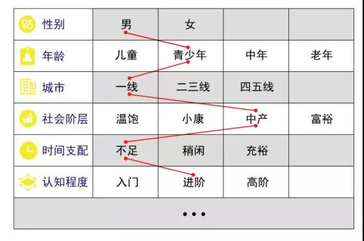
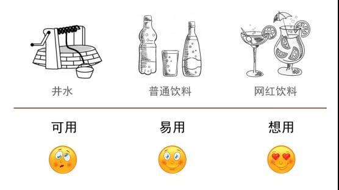
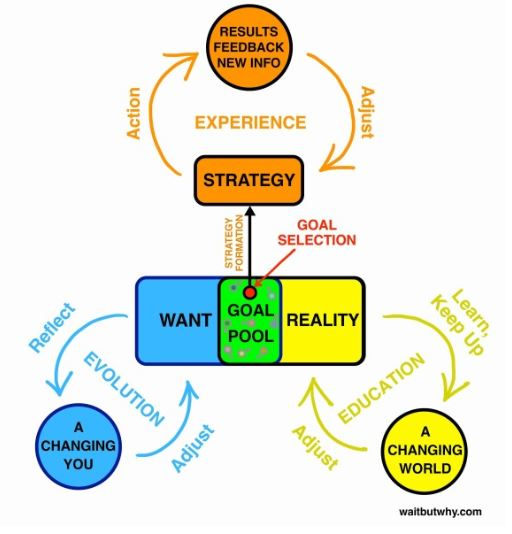
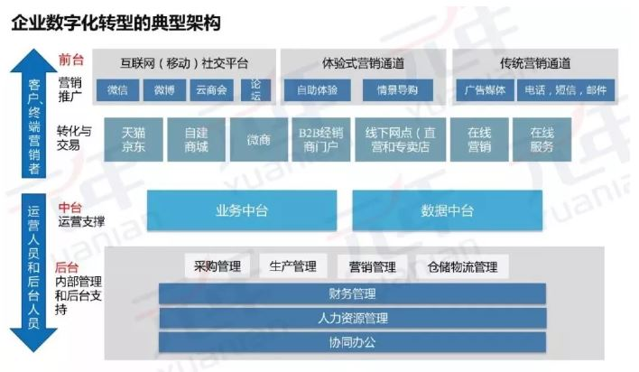
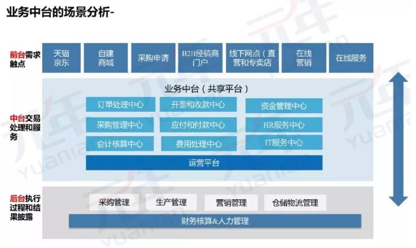
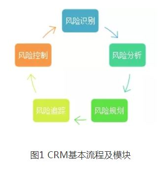
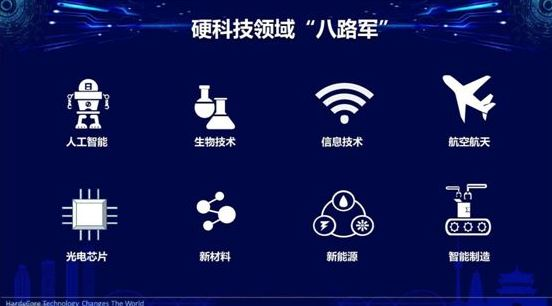
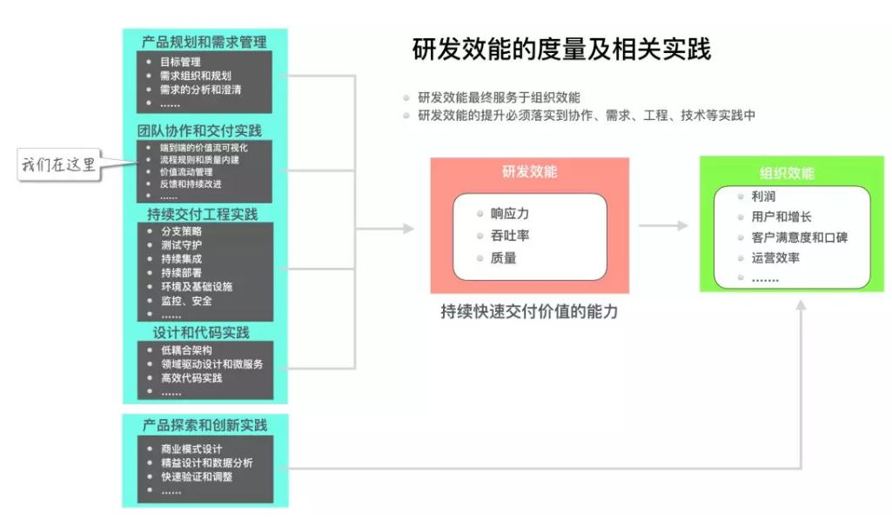

Perspective
Observation & Perspective 观察与认知
Collected by Jianan, 2019. 本章节会实时收录社会观察，全球观点和认知动态。部分文字从原文直接引用，小部分为我的个人短评。如有侵权，立即删除。本文仅供个人参考学习，不作商业用途。
- Perspective
- 20190617 论系统知识体系
- 20190616 机器学习与现代数学建模的竞争与合作关系简析
- 20190610 产品经理怎样思考问题？
- 20190526 瑞幸咖啡“狂奔”上市，下一个ofo正在慢慢成形？
- 20190512 停滞的原子世界和狂奔的比特世界
- 20190429 Elon Musk 的思考方式
- 20190413 企业管理和信息实践的"中台化"
- 20190413 航天项目研制风险管理模型
- 20190413 如何看待知识付费？
- 20190407 王贻芳：中国基础科学研究在世界上处于什么水平？
- 20190326 纳斯达克和硬科技
- 20190310 星巴克猫爪杯
- 20190310 罗永浩和锤子科技的折戟
- 20190309 美妆品牌如何玩转小红书和B站
- 20190309 抖音的吸引力法则
- 20190228 以色列的科技创新优势、经验及对中国的启示
- 20190217 如何衡量研发效能
- 20190119 研发团队如何使用OKR目标管理框架
20190617 论系统知识体系
- 才能有两类：街头智慧和科学方法。
- 认知事物和思考有两个基本的逻辑法则：归纳法和演绎法。
- 知识广义上来讲可以分为五类：数据、信息、知识、才能和智慧。数据经过整理变成信息，信息能解决某个问题就是知识，知识通过反复实践形成才能，才能融会贯通就是智慧。才能和智慧就属于元认知的范畴。从知识到知识体系的构建就是元认知的构建。
- 作者同时谈到了如何构建知识体系。
20190616 机器学习与现代数学建模的竞争与合作关系简析
20190610 产品经理怎样思考问题？
笔者根据自己有限的用户研究与产品设计的工作经历，把产品经理思考产品的视角拆解成三个维度:
- 用户维度: 一定义，两核心
- 定义用户：用户群分，人性分析
- 需求过程的分析
- 产品体验分析
- 产品维度: 三层次
- 信息机构，页面布局，业务实现
- 商业维度: 四创新
- 市场创新， 价值创新， 产品创新， 盈利创新
举例说明：
-
用户群分

-
人性分析
- 贪：贪，无可厚非，鸟为食亡亦然。
- 懒：懒人促进了科技的发展。
- 怕：没有人是神，我们都会怕，怕生老病死，怕职业瓶颈，怕孩子学业不好。
- 好奇：好奇心害死猫。因为好奇，人不断的探索。
- 炫耀：花虫鸟兽皆会争奇斗艳。人得到了新的成就，变得更好，都会有炫耀的心理。
-
需求过程

-
体验：可用感，易用感和想用感。

-
四个商业创新：
- 市场创新：有人的地方才有消费才有市场，我们需要考虑面对什么市场，什么市场在崛起，什么市场在消沉。最近下沉市场一片火热，拼多多，快手都在抢夺领地，线上市场向线下市场转移，新的产品也随之而生。对于这些宏观的变化，产品经理应该去关注并挖掘其中的可能性。
- 价值创新：商业的核心是价值创造，若不能给用户提供价值，用户分分钟会抛弃你，不断进行价值创新才能让产品拥有持久的生命力。例如：鱼户养了一池塘的鱼，他可以捕捞了鱼卖到市场，或者转换成农家乐，让游客来钓鱼，两种不同模式让鱼创造了不同的价值。同理：你把自行车直接卖给用户还是以共享的方式租给用户，这也是两种不同的价值创造过程。
- 产品创新：技术和社会的发展，推动着产品的前进，对于产品需要不断创新以满足甚至引领用户需求。当然技术可以驱动产品创新，用户也可以驱动产品创新。例如：今日头条利用推荐技术的发展，将资讯根据个人兴趣爱好进行分发；视频弹幕的出现让用户观看不再孤单冷清。产品的创新让用户需求和体验得到更好的满足。
- 盈利创新：商业所做的一切事，如果不能转化为切实的收益，只能是一场空。共享单车在解决出行最后一公里上，没有做到盈利的创新，不能自我造血，轮子就不能前行。我们常见的盈利方式有收费会员、广告、佣金等等，但是需要结合具体业务进行盈利变化与创新。
20190526 瑞幸咖啡“狂奔”上市，下一个ofo正在慢慢成形？
5月17日，创办仅18个月的瑞幸咖啡，登陆美国纳斯达克上市，刷新了中国企业赴美IPO的最快速度，按发行价，瑞幸的市值为42.5亿美元，成为今年在纳斯达克IPO融资规模最大的亚洲公司。这或许是今年最饱受争议的品牌之一，备受诟病的理由主要是：融资额巨大但还没有盈利；一上来就挑战世界巨头，来势汹汹；非常高调，大规模扩张。但是，当回顾瑞幸咖啡的疯狂扩张的烧钱之路，以及抽茧剥丝它庞大数据背后的现实困境时，我们不禁要问一句：咖啡独角兽，会不会成为资本市场的下一只毒角兽呢？
在互联网时代，为了能够在最短的时间获得最多的流量，资本市场中似乎有了一个约定俗成的习惯，就是在资本的推动下跑马圈地、抢占地盘。
- 从2017年10月正式成立以来，瑞幸咖啡就在各种“花式找钱”。除了正规融资以外，还有个人借款、贷款、融资租赁、抵押贷款等，估算总额，瑞幸咖啡已经找到了近10亿美元（约68.56亿人民币）。
- 2017年10月第一家门店在北京银河soho开业，2018年5月门店数量超过500家。截至2019年3月31日，瑞幸咖啡已经在全国横跨16省的28座城市拥有2370家门店。
- 2019年4月22日，瑞幸咖啡发布了招股说明书，计划在纳斯达克上市，代码LK。
- 瑞幸咖啡的第一大股东实则为掌握30.53%股权的“神州系”掌权人陆正耀。
- 仅用十八个月的时间，钱治亚就打造出估值高达29亿美元（约199亿人民币）的咖啡独角兽。为什么急着上市？ --- 她声称烧出去的每一分钱都能换来用户，但是再多的钱也有用完的第一天，只要一天没有实现盈利，瑞幸咖啡就必须寻找资金来源以维持和扩大经营，于是，经历了三轮正式融资的瑞幸把目标定在了纳斯达克。
- 瑞幸最大成本支出是瑞幸门店的门店租金及运维成本，瑞幸门店一般50平米左右，开在办公楼、商业区和大学校园等咖啡需求量大的区域，但绝非核心地段和位置，已经极大地控制成本。而星巴克门店区位往往是核心商业中心、商业街黄金地带
- 面对瑞幸咖啡利用“新零售”的模式迅速壮大的局面，星巴克也在2018年和阿里巴巴达成战略级合作，同时在饿了么上线，补上了互联网外卖这一销售渠道。
- 根据国泰君安的一份研报数据，我们看到，在市场规模、人均消费方面，现煮咖啡在中国的市场上都还处于一个刚刚起步的阶段，中国的老百姓们对于咖啡依然没有形成消费习惯，而这一点毫无疑问是个巨大的商机。
- 一边是资本强势介入，以互联网打法改变传统咖啡行业的套路；另一边以星巴克、Costa为代表的全球咖啡巨头被迫求变，增加互联网基因
钱治亚是谁？：
-
钱治亚是神州租车、神州优车两家上市公司的创始元老，并先后担任两家公司的首席运营官职务。
-
2017年11月，神州优车董事、副总经理钱治亚因个人原因离职。同时，钱治亚仍将担任公司战略委员会委员。
-
钱治亚离职后投身咖啡领域创业，创立瑞幸咖啡（luckincoffee），定位为中国人的高品质商业咖啡，将在全国各大城市进行网格化布局。
什么是新零售？
知乎链接对于新零售的解释。
基于四点原则：多，快，好，省，在此基础上的各种模式。
- 比如多：种类多，比如淘宝，各种聚合性app
- 比如快：新的物流模式，供应链
- 比如好：网易严选
- 比如省： 低价，拼多多等
- 其他例子：超级物种就是“超市+餐饮”的一种零售新模式，即以轻时尚、轻奢侈餐饮的格调为基础，塑造一个完整的“超市+餐厅+互联网”的商业模式。其核心目的是为了契合国内消费升级的潮流，实现线上线下的链接，打造完整的电商平台，从而适应客户结构和消费习惯的改变。
20190512 停滞的原子世界和狂奔的比特世界
按世界银行的统计，如果以每年10作为一个维度进行统计，自60年代以来，世界GDP增速一直在下降——60年代增速是5.32%，70年代是3.77%，80年代是3.16%，90年代是2.81%，00年代是2.59%，10年代则是2.45%，很遗憾，我们这代人引以为傲的计算机和互联网在GDP增长的贡献方面远没有想象的那么大。
第一个问题：长达半个多世纪的原子世界的沉寂和停滞的本质原因是神马？
- 一战，二战，冷战等的大规模战争的结束。战争在给人类带来痛苦的同时也在客观上推动着技术迅猛前进。
- 我们对风险的态度发生了变化。人本身变得更为重要，我们对生命更为注重，
- 一种新药被批准上市的时间在50年代平均为8年，到20世纪末为13年；
- 开始警惕技术的负面作用——对人工智能加以限制；对基因编辑加以限制；对垄断加以限制
- 天生追求最大化利润的市场主体”企业“找到了一种更加高效产生利润的产业——信息技术（还可以加上现代金融业）。比特世界会比原子世界更容易聚集财富。
- 复制成本极低
- 传播速度极快
第二个问题：为什么在我们看来对人类产生产生革命性影响的计算机和互联网对GDP的贡献显得微不足道？
- 互联网对实体经济的渗透率还不够
- 互联网的作用在短期内还很难体现
- 图书-电子书”模型：“印刷厂，经销商”不参与整个过程，因而降低了总GDP产出
第三个问题：比特世界和原子世界的未来交互方式是什么？
- 原子世界比特化：随身听变成了iTunes；书籍变成了kindle；光学相机变成了数码相机；钢笔变成了键盘；纸张变成了Word；钱变成了支付宝和微信里的密码
- 比特世界原子化：3D打印技术和机器人技术
- 原子比特的互相结合：Iot、自动驾驶、可穿戴设备
- 蒸汽机-->电-->互联网-->AI
20190429 Elon Musk 的思考方式
首先推荐一个网站： Waitbutwhy，作者极其擅长两件事：把浅显话题写得鞭辟入里，把硬核话题写得简洁有趣。
本文来源于此
- 确定目标：梦想和现实的交集可以定义为目标。如果目标为复数，则可以定义为目标池。
- 制定策略：根据目标池决定策略。
- 行动验证：行动是一种测试策略的方式
- 三大进化：策略进化，目标进化，现实进化

20190413 企业管理和信息实践的"中台化"
前台通常是面向客户的市场、销售和服务部门或系统，后台通常是技术支持、研发、财务、人力资源、内部审计等二线支撑部分或系统。之所以有提出中台概念主要有两个视角，一是前后台经常脱节，前台抱怨后台脱离业务、支持和服务不到位，后台抱怨前台经常变化、信息反馈不及时。二是后台部门能力重复建设、共享程度低、数据孤岛、信息传递不通畅。
前后台在管理上的矛盾突出地体现对客户需求的快速响应的效率上，现在商业模式和企业价值链要求企业的后台的部分服务职能前移，“能听得到前线的炮火”，能更好的支持前台和客户的需求，快速的为前台提供更多更快的“炮弹”。
所以在管理架构上和企业信息化的架构上逐渐的“中台化”，其核心的表现形式：

通过业务中台将后台的部分服务职能前移，使之更接近客户，以便更快的响应客户需求和提供响应的服务，承担起前后台的衔接作用，中台作为企业“承前启后的”重要资源，将在企业快速发展中发挥中坚力量。业务中台作为服务中心和资源调度中心，我们理解主要有以下的职能：

总之，业务中台更多的是发挥服务职能，为前台提供更好更快的服务而设立的，本身没有固定的模式，一切以前台和客户的满意为宗旨进行建立。
20190413 航天项目研制风险管理模型
本篇节选自论文《航天项目研制风险识别与分析探索》，发表于《中国电子科学研究院学报》第14卷第2期。
摘 要：针对航天型号项目复杂度提升和大量新技术应用对风险管理提出的挑战，分析航天型号研制风险的特点，围绕风险识别“全面性、准确性”核心目标，提出了以故障树、风险树为两个抓手，从五个维度进行分析的风险管理工作思路，并详细说明了航天项目技术风险线索识别模型的建立，对技术风险线索模型的应用效果进行了评价，可供相关项目风险分析借鉴。
1986年之前，美国航空航天局极少采用定量的方法进行风险分析，一直到“挑战者”号航天飞机发生爆炸事故后，美国航空航天局才认识到了定性分析方法存在的不足，并从1998年开始引进持续风险管理的理论与方法（Continuous Risk Management，CRM），CRM包括5个模块，分别为风险识别、风险分析、风险规划、风险追踪及风险控制模块，它们在过程中首尾相连，具体见图1。1999年美国航空航天局在应用CRM的基础上，引入了概率风险评估理论及方法（Probabilistic Risk Analysis，PRA），并在2002年3月发行了针对所有项目经理的PRA手册[5]。

近年来，美国航空航天局风险管理的思路变为将CRM和PRA结合起来，应用PRA估计风险发生概率，完成风险等级与风险影响的估算，用定性和定量结合的方法，来整体把握项目风险发生的规律以及可能造成的影响，构建动态风险管理的程序和组织[6]。
ESA（欧航局） ESA一方面吸收了美国概率风险分析技术的精华，同时对这些技术的具体内容进行了改进，通过对项目风险的定量分析，来实现对产品质量及产品保证的持续改进。ESA广泛采用PRA方法应用于对航天系统的安全性分析，取得了丰硕的成果，而且ESA已形成了应用PRA方法进行航天系统安全性分析的标准。此外，随着当前计算机技术的飞速发展，计算机仿真技术开始进入风险管理相关领域，并开始发挥越来越重要的作用，一系列风险
20190413 如何看待知识付费？
首先我们要认识到知识消费与商品消费的差别。 知识的消费链条包括四个环节：知识创造、知识产品化、知识消化、知识使用。作为商品和服务的消费者，我们付出的就是金钱。要消费知识，金钱只是我们所付出的很少的一部分，我们付出更多的是时间和精力。作为商品和服务的消费者，我们很快得到消费的结果，商品和服务与期望不一致的情况很少发生。知识以外的商品和服务遵循所见即所得、所用即所得的模式，它的效用可以相对明确的评估。要消费知识，我们通常要很久之后才知道结果，知识产品的结果与期望不一致的情况经常发生。
第二要消费知识，我们需要选择消费什么样的知识。这就需要选择知识（和选择商品一样）。选择知识的前提是要认识了解自己现有的知识体系。知识消费是分等级的。我们可以很容易地消化略高于自己水平的知识，对于远超自己知识背景和能力的知识则很难消化。总是消费容易的知识相当于吃糖果，吃太多通常有害无益。
第三选择完知识后我们需要消费他，即学习和运用。我们应当定期地回顾和优化自己在这个新领域的知识框架。对于实用性的知识，我们学习的目的是使用它，学习的方法也应当实用。我们认为，实用的方法是：通过“输出”学习，通过“使用”学习。一个可行的改进就是强调“输出”：在进行学习性的阅读时，要做摘要，整理思维导图，撰写阅读笔记，向他人介绍这本书，举办讲座系统地讲述。输出可以刺激和优化学习过程。互联网、移动互联网让这种分享变得更加便捷，我们可以在微信朋友圈进行简短的读书分享，和朋友微信讨论读书的体会，在各类微信群进行读书微课分享。将知识投入使用，如果能够进行系统性的总结，向他人传授为什么、怎么做，分享自己的经验与教训，这样的输出更会让我们的知识学习和使用更加有效。能否将自己的经验传授给他人，是验证自己对知识和技能掌握程度的关键指标。
- 要认知自己现有的知识基础。
- 要努力构建自己的知识体系
- 要改变传统的学习方式，通过“输出”学习，通过“使用”学习
- 我们也要改变对知识价值的评估方式，重视有针对性的知识，要重视通过分享和交流学习。
20190407 王贻芳：中国基础科学研究在世界上处于什么水平？
王贻芳院士是首位获得“基础物理学突破奖”的中国科学家，2012年，他领导的大亚湾反应堆中微子实验发现新的中微子振荡模式，被《科学》杂志列为当年全球十大科学突破。
观点一： 什么是基础科学？我认为基础科学应该具有三方面的特征：
-
有一定的规律性，反映了自然界的基本规律；
-
不能直接应用到实际中，但是它是解决实际问题的基本原理，比如牛顿力学并不能教你怎么盖房子，这是土木工程需要解决的问题，但是牛顿力学是土木工程的基础；
- 基础科学内部还有层次性，比如很多领域里虽然有独有的基础研究，但是都离不开数学，所以数学在基础研究里更为基础。
中国古代虽有四大发明、也有 “勾股定理”等发现，但我们只停在了“发现”阶段，并没有进一步发展出抽象的、纯粹的科学。而早在古希腊时期，西方就出现了几何学、逻辑学等科学，然后通过逻辑推理发展出一整套科学体系。
观点二： 欧美国家的崛起是在基础科学水平提升的基础上
没有热力学、牛顿力学以及麦克斯韦的电磁学等科学作为基础，两次工业革命根本无从谈起。拿高能物理领域来说，在研究过程中产生过很多意想不到的新技术。比如上一代美国最大的加速器“Tevatron”，给我们带来了超导磁铁技术的突破与普及，现在，医院临床所用核磁共振设备中就采用了超导磁铁。万维网也是在高能物理研究过程中产生的。
观点三：基础科学还给西方带来了科学的方法论。科学的方法论有两个：一是逻辑推理，二是归纳。古希腊以来，人们总结出一整套推理的方法，而弗朗西斯•培根之后又有了实证科学，西方的科学体系就是建立在归纳推理以及实证等根本支柱上。
观点四：基础科学研究是文明的一部分：国家经济发展起来并有一定的基础后，就会发展艺术、音乐、文学以及科学。
观点五：怎么评价一个国家基础科学水平的高低呢？ 基础科学研究的重要性就体现在它对整个科学领域的影响，一个国家有影响力的基础研究成果越多，这个国家的基础科学水平就越高。看看我们的教科书就会明白。无论学的是数学、物理还是化学，无论是在中学、大学还是研究生阶段，教科书里都会写到一些用科学家名字命名的基础研究成果，这些就是最经典的基础研究，它们会永远流传下去，比如，现代物理学绕不开爱因斯坦的相对论，不可能不用量子力学。当然，还有一些研究成果是被论文引用较多的，虽然也有较强的影响力，但跟写进教科书相比还是差点。到目前为止，我国已有的这些重大科学成果能够写进教科书的几乎没有。
观点六：中国古往今来的基础科学的水平：中国古代没有建立起基础科学的体系，所以中国的基础科学基本就是从“零”开始，经过多年努力，中国的科技水平如今已经在世界高科技领域占有一席之地了。但因为起步较晚，中国基础科学研究跟欧美的发达国家还存在一定差距，教科书中也很少有用中国人名字命名的公式、定理等。中国基础科学研究还有很长的路要走，我们只是某个项目在国际上取得了领先的地位。
观点七：怎样实现从“零”到有的转变呢：遵循基础科学发展规律，不能揠苗助长。发展教育，对于基础科学，最需要的就是培养学生“从无到有”的方法论，要让他们学会做前人未做过的事，这跟培养工程师的思路是不一样的。基础科学承担的任务基本处在“无人区”，都是需要思考别人没解决的问题。有了更多掌握“从无到有”方法论的人，我们社会的整体创新性才能提高。提高国家经费投入。
20190326 纳斯达克和硬科技
本文讲述了纳斯达克中及其硬科技的成长史。纳斯达克的成功是建立在美国经济增长、科技进步的基础之上。目前中国科创板就是“万事俱备，只欠东风”，从政策、制度再到资金，实现配套并不难，关键是如何推动科技进步，涌现出一批引领科技潮流的公司。科创板的成功就是中国的成功。

20190310 星巴克猫爪杯
My review: 归纳一下星巴克猫爪杯遭热抢的原因：
- 起始原因：星巴克的饥饿营销：上架前营造供不应求的假象。
- 主推手原因：黄牛的借机炒作：黄牛巧妙利用人们的“担心错过”和“争夺”的心理，肆意哄抬价格
- 环境原因："吸猫文化"/“萌宠文化”在年轻人中的盛行和跟风
- 消费者原因：哄抢也是一种娱乐方式：和打球玩游戏听歌看综艺等类似，“看似哄抢”作为年轻消费群体的一种娱乐消遣方式，或者叫做 pseudo entertainment, 准娱乐
- “每生产4个猫爪杯就会失去一只猫”
为了一个杯子，不仅让人彻夜排队，还让疯抢者大打出手，发售价从原价199元炒到1000多元，星巴克猫爪杯以一种带有魔幻色彩的方式走红了。星巴克多年杯子文化和年轻人热衷的萌宠风格为猫爪杯提供了走红基础，但门店只发售个位数，近乎严苛的限量配额才是这次杯子战争的引爆点。在商品经济中，稀缺性并不是决定人们抢购的唯一因素，“争夺”才是，人们“担心错过”心理将变成强烈的拥有欲。毕竟，顾客购买的从来都不是产品，而是一种叫满足感的东西。
20190310 罗永浩和锤子科技的折戟
My review: 罗永浩的情怀营销在开始阶段能制造大量热点，同时现在很多年轻消费则也愿意为情怀买单。但是情怀不是整天嚷嚷，而是要真正渗透进产品中。罗可以算是一位成功的流量商人，但不是好的产品经理。做好一款好的智能手机不仅仅是简单的组装，即使是组装，也需要复杂的供应链系统，更是融合了硬件，软件，设计等等的跨学科领域，没有深厚的技术沉淀是做不好的；即使能做出来，也只是算是把零件堆加到一起，而不是一个精密的完整系统。看罗的简历：高中辍学，当新东方英语讲师，创办博客网站(后倒闭)，再到锤子科技，我觉得这些经历还不足以撑起一个好的科技公司创始人。反观乔布斯，扎克伯格，马斯克，劈柴，至少都是大学经历或研究生，并且拥有工程背景(和经济学背景)，而且很多都是从技术背景过渡到管理层，在工程师思维方式，管理/产品的思维深度和模式以及领导能力来看，罗和其他人还是有不少差距。
罗永浩在手机圈的征途似乎走到了终点。媒体爆料称锤子科技已停止新手机的研发，而在1月份锤子天猫旗舰店也已全部清空。高喊“改变世界”闯入陌生领域，罗永浩踌躇满志，他想重新定义中国手机产业。理想主义+搅局者的定位给他带来不少粉丝的追捧，但过分追求小而美，缺乏市场敏锐度，让锤子错失了产品推新节奏，情怀和感性在现实面前撞得头破血流。他人眼中的荒诞滑稽，自我世界里的理想主义。在罗永浩的身上，仿佛看到了那位冲向风车的唐吉诃德。
-
2012年，罗永浩宣布进军手机领域，在好朋友，陌陌创始人唐岩的帮助下，老罗很快就搞到了第一笔900多万元的投资。没过多久，曾投资了陌陌并赚得盆满钵满的紫辉创投决定跟进，截止2013年5月，锤子科技融了8000万元人民币。这笔看似巨额的资金，实则只能算得上手机行业的入场券，英文里叫做“Pay-to-play”。
-
2014年5月，锤子手机正式发布，命名为Smartisan T1。这款姗姗来迟的手机随后被曝出严重的品控问题，再加上产能危机，最终只卖掉12万台左右，而此时，智能手机市场逐渐饱和，一直以性价比著称的小米冲到了国内市场第一，华为也逐渐崛起。
-
2017年5月，锤子科技推出了它的第5款新机坚果pro，该产品大大改善了公司营收状况。同年8月，锤子科技拿到了新一轮共计10亿元的融资，其中成都市政府方面领投6亿元。
-
2018年传闻接踵而至：成都公司解散、高管离职、资金链断裂等等。同年5月发布的新品，也就是那款售价高达9999元的坚果TNT工作站，备受质疑，更是成为网友的笑柄。8月，罗永浩发布了一款社交App：子弹短信，迅速攀升至App Store免费榜和社交榜首位。不久，罗永浩在微博宣布，子弹短信上线7天，快如科技已完成第一轮1.5亿元融资。
-
2019, 从接近锤子科技内部人士处得知，锤子科技已基本停止新手机的研发，目前团队主要工作停留在维持系统和产品基本运维上。
初入手机圈的罗永浩曾经居高临下的总结过：国产手机厂商除开华为之外，都是组装商，不过是拿供应链创新在给自己脸上贴金。这番话背后，罗永浩的潜台词是：做手机没有什么门槛，大家的区别就是品牌营销的能力，这是罗永浩的最大底气所在，但事与愿违，锤子手机数次重大失误都证明了：核心的问题就是出在供应链了，手机行业远没有想象的那么简单，很多时候事情从想到到做到之间有巨大的鸿沟，而一直以嘴炮屠戮江湖的罗永浩最终还是掉入这条深不见底的鸿沟，从2019年开始锤子手机这个名字将永远淡出人们视野，成为一种久远的记忆。
20190309 美妆品牌如何玩转小红书和B站
完美日记迅速走红的背后离不开内容营销模式的打造，完美日记的营销几乎包含了所有热门的营销渠道：
- 微信：以类目拔草或者测评形式出现
- 小红书：截至2019年1月，小红书的注册用户量已经破2亿，日活突破1000万，接近90%的用户是女性，从年龄分布上来看，25-35岁的用户占了总用户的63%，因为这一年龄段的用户处于事业稳定或者上升的时期，消费能力相对较强。完美日记在小红书的内容+渠道打法是什么呢？
- 图文笔记
- 通过明星的种草引起消费者关注和讨论；
- 通过头部和腰部达人的试色达到真正的种草，引导消费者购买；
- 然后普通的素人消费者购买后又回到平台UGC，进行二次传播。
- B站
90后，尤其95后非常追求个性化的生活方式，在这一波新的消费升级趋势中，用户正从炫耀型的消费升级变成体验式的消费升级。曾经单纯追求奢侈品和大LOGO的时代不再是90后、95后的时代，他们更追求个性化的产品，更倾向于取悦自己。
“小红书是一个捕捉者和观察者。我们发现用户的消费行为在改变，开始买中小品牌的东西。”
“很多企业并没有发现用户消费趋势其实已经改变，尤其国际大牌，但国内的品牌制造能力很强，反应也快，这就是为什么现在国内的中小品牌崛起速度很快。”并且在内容生产和渠道分发上，集中在90后，95后喜欢的阵地，尤其如小红书B站这样的平台上。
其实对于市场营销人员来说，不需要再单一的迷恋微信or微博，其实随着HFP、完美日记、薇诺娜、植观等国产品牌，通过微信公众号、微博小红书、抖音等新媒体平台、依靠内容营销成功崛起，预示着品牌的玩法，升级更新了，更加多元化，更加人群化，也会营销人员带来了更多的思考和创新。
20190309 抖音的吸引力法则
吸引力法则，拆解开来就是“一个模型+五组案例”。一个模型就是心智旅程。看抖音的过程就是一段“心智旅程（mind journey）”。什么是“心智旅程”？人的行为无论大小，都是由动机驱动的。而高明的内容创作者，绝对是洞察人心，影响用户心智的高手。五个期待分别为：
- 音乐期待：用音乐情绪制造悬念。BGM是抖音的灵魂，合适的BGM是爆款的关键要素。
- 人物期待：真人出镜的视频里，不同类型的人物会直接产生不同的心理预期。好看和新奇能最大限度直接刺激用户的心理预期，比如观感上“好看”的人物、名气上有知名度的的人物、造型上超出日常认知的人物、有新奇的特殊才艺的人物……
- 开门见山式期待：有趣的灵魂与有用的主题：比如“春节在家如何健身”解答how，“春节护肤99%的人都做错了”解答why。
- 身份期待：代入感自带共鸣属性：人们对与自己有关的内容会格外关注
- 文案期待：把上述方式植入文字
20190228 以色列的科技创新优势、经验及对中国的启示
来源：《中国经贸导刊（中）》2019年05期
作者：方晓霞，中国社会科学院工业经济研究所财务与会计研究室副研究员
摘要：以色列是世界高科技创新企业最兴盛的国家，是全球创新创业集聚地，跨国公司研发中心的集聚地，科研水平全球领先，享有“创业的国度”的美誉。以色列经济增长率曾多年保持在10%以上，人均国内生产总值超过英、法、日等世界经济大国。一个周边强敌环伺的弹九之地，在建国之后约70年的时间里创造出了如此多的科技、经济奇迹，其经验足以值得我国深刻地研究与借鉴。
以色列地处亚洲西部，地中海东岸，资源匮乏，地域狭小，管辖国土面积仅有2.57万平方公里，人口约为871万，约占世界总人口的千分之一。但这个人口与地理上的小国却是世界创新创业的“超级大国”，为世界贡献了20%的诺贝尔奖获得者，人均拥有创新企业数目居世界第一，在纳斯达克上市企业数目位于美、中之后，超过欧洲所有企业的总和，享有“中东硅谷”、“创业国度”的美誉。以色列经济增长率曾多年保持在10%以上，2017年以色列人均国内生产总值超过4万美元，超越英、法、日等世界经济大国，居世界第20位。根据世界经济论坛《2016-2017全球竞争力报告》，以色列在全球最具竞争力的144个国家和地区中排名第24位，在全球37个创新趋向型经济体中排名第3。一个周边强敌环伺的弹丸之地，在建国之后的70年多年时间里在科技、经济领域创造出了如此多的奇迹，其经验足以值得我国深刻地研究与借鉴。
一、以色列的科技创新优势
自1948年建国以来，以色列一直将科技作为立国之本，坚持以创新驱动发展，科技对GDP的贡献率在90%以上，在信息通讯、计算机、高端装备、半导体、材料、环保、可再生能源、生物医药、医疗器械、军工等高附加值领域均保持了世界领先的创新优势，是全球高新技术重要来源地之一。
（一）全球创新创业集聚地
以色列是全球高科技企业创业密度最高的国家。目前，以色列高科技领域的初创企业超过6000家，仅次于美国硅谷，创业密度世界第一。据《以色列国家技术创新报告2016-2017》的统计，以色列共有高科技企业7072家，其中互联网企业占25%，电信技术企业占20%，计算机软件技术研发占19%，生命科技企业占17%，清洁技术企业占9%，半导体公司和网站技术研发企业各占2%[1]。另据以色列中央统计局数据，以色列72%的初创企业地处拥有“创业之城”之称的特拉维夫及其周边地区。
（二）跨国公司研发中心集聚地
以色列利用全球创新资源进行开放式创新，拓展发展空间，强化竞争力，已成为全球跨国公司、特别是高科技领域跨国公司的研发中心集聚地。除以色列本土的科技企业如朗新（Amdoc）、捷邦（Checkpoint）外，谷歌、苹果、脸书、微软、亚马逊、IBM、英特尔、高通、东芝、戴尔、雷诺、博世、微软、美国在线、三星、西门子、德国电信、英特尔、雅虎等全球400多家世界知名跨国公司都在以色列设有研发中心，孕育出不少影响世界的科技创新产品，包括迅驰和双核处理器、网上交易安全系统、U盘等。联想、小米、华为、吉利、上汽集团等一批中国企业也相继在以色列设立研发中心。另外，百度、腾讯、阿里巴巴、奇虎360等中国公司都投资过以色列公司，有数据显示，2015年中国对以色列的高科技产业投资增长54%，仅风险投资就超过500万美元[2]。
（三）科研教育水平全球领先
据以色列中央统计局发布的数据显示，2017年，以色列的民用研发支出约合160亿美元，较上年增长11.1%，占该国国内生产总值（GDP）的4.5%，在经合组织（OECD）国家中名列前茅。2017年，以色列的人均研发支出为1752美元，是经合组织成员国人均研发支出最高的国家之一。企业是以色列研发支出的“主力军”。按现行价格计算，2017年，以色列工商部门（Business sector）的研发支出约为148亿美元，占全国研发支出的86%，而其余部分则由高校、政府部门和私人非营利性机构承担。
另有数据显示，以色列劳动人口中约有1/4是科技人员，平均每万名公司职员中拥有工程师和科学家就近150名，名列世界第一（美国为85名，日本为65名）。以色列从事研发的全职人员占总人口的比例为9.1%，也位居世界前列。同时，以色列每万人中在国际科学杂志上发表论文数居世界首位，人均科技论文数居世界第3，人均论文引用数据居世界第4。在世界人均注册专利数量也位居世界第4。
二、破解经济发展与资源匮乏
矛盾的以色列成功经验
以色列国土面积狭小，荒漠遍布，资源贫乏，且与周边的阿拉伯国家长期处于敌对状态，但在短短的几十年间，却成就了举世瞩目的“创新传奇”，除了犹太民族敢于创新、勇于挑战的文化影响外，也离不开政府一贯的支持，以及产学研的良好互动。
（一）政府是科技创新的主要推动者
以色列政府一直把推动创新作为国家发展的重中之重。一是制定法律法规鼓励、保障创新。早在1985年，以色列就颁布了《鼓励产业研究与开发法》，规定了政府鼓励和资助产业研究与开发的一般原则，其中规定所批准的研究与开发项目所需资金的2/3可以由政府提供。为了鼓励向处于初创阶段的高科技企业投资，2011年，以色列又颁布了《天使法》，规定符合资格的行为主体投资于以色列高科技私营企业，可以从应纳税所得中扣除所投资的金额。同时，以色列实行了严格的知识产权保护制度，制定了《产权法》、《商标条令》、《版权法》等一系列法律法规。二是建立了完善的科技创新管理体制，保证全国科技工作有序运转。建国之初，以色列就制定了科技发展的长远战略规划。由科技部、经济部等13个部门共同组成国家科技决策体系，负责制定科技政策、设计发展规划和确定重点项目，形成合力以推进科技创新。从1974年起，以色列创立了首席科学家负责制，主要部门设有13个首席科学家办公室，负责制定制定年度科技计划、资助科技研发、协调指导相的科技活动，支持大学与企业构成研发联合体，促进产学研有机结合等。
（二）构造创新生态系统助力企业创新
在以色列数千家创新企业中，绝大部分是中小企业，资产总额超过10亿美元的企业屈指可数。中小企业有快速反应根据市场需要灵活选择或改变创新方向的优势，但抗风险能力相对较差，大部分初创企业都不能走出创立前三年的“死亡谷”。为了帮助企业克服早期发展的困难，提高存活率，以色列于1991年开始实施技术孵化器计划（Technological Incubators Program），设立不以营利为目的的技术孵化器，为创业企业提供场所、资金、技术、市场等服务。以色列的孵化器一般隶属于著名的大学、地方行政区域或者工业集团。政府不仅对孵化器数量和运营模式有严格的限制与规范，对进入和退出也设有严格的壁垒。在解化器运营过程中，政府坚持“共担风险，但不分享收益”的原则，为进入到孵化器的企业提供为期两年的低息优惠贷款，创业失败的企业，则无需承担偿还责任。政府对对孵化项目的投资占比高达85%。此外，政府还扮演“母基金”的角色为种子阶段科技创业公司提供资金支持。1993年，以色列政府出资1亿美金设立10只风险投资基金。其中政府投入的份额占40%，但是规定剩余的60%份额必须包括国外风险资本公司。与上述优惠贷款机制相同，政府同样“共担风险，但不分享收益”，孵化成功的企业上市或并购后政府资金退出，转为由专业投资机构接管运营。以色列存在各类规模不同的孵化器，它们的功能定位也不尽相同。小型孵化器以服务企业和天使级的风投为主，大型孵化器又分为智能硬件孵化器、生物技术孵化器、农业解化器、国际创投加速器（微软加速器、Microsoft Ventures）等。此外，以色列还拥有种类繁多的加速器，它们是由私人部门自营的创业辅导机构，有背靠大学或研究机构的技术转移机构，也有IBM、微软等各大企业推出的加速器，也有在原有场地重塑自身的创新空间。在政府支持、社会资本以及大学解化等合力作用下，以色列逐步形成了由初创企业、孵化器、加速器、工业园区、风险投资和国际资本等组成的良好的创新创业生态系统。
（三）开放式创新、重视教育与吸引人才是以色列创新竞争力的主要来源
一是以色列重视国际研发合作，积极推动开放式创新，目前，已同欧盟、美国、日本、OECD国家、联合国科教文组织等全球重要的创新国家和国际组织达成了科技合作协议；参加了数十个国际和国家间工业研发活动，与包括中国在内的许多国家和地区开展了项目合作。为了吸引跨国企业来以色列投资，政府还推出了项目资金支持和税收优惠等。二是以色列政府高度重视教育。教育投入占GDP比重长期保持在10%左右，全国77%的人口接受过12年以上的教育，就业人口中拥有高等教育学位的比例达到45%，为科技创新积累了大量的高素质人才。三是来自发达国家和的前苏联犹太移民也给以色列带来了很多科学技术，为以色列创新发挥了很大作用。外来移民普遍拥有较的高学历，有非常多优秀的工程师，这些人才对以色列高科技产业的发展发挥了不可或缺的作用。
三、对我国的启示与借鉴
经过几十年的快速发展，我国制造业规模跃居世界第一位，但与先进国家相比，关键共性技术和核心装备受制于人，大而不强的问题依然突出。随着我国经济进入高质量发展阶段，长期以来主要依靠资源要素投入、规模扩张的粗放型发展模式难以为继。通过科技创新培育经济增长新动能，构建新型制造体系，促进制造业向中高端迈进、实现制造强国具有重要意义。
借鉴以色列经验，我国要实施创新驱动发展，就要进一步深化改革，破除一切束缚创新驱动发展的观念和体制机制障碍，坚持以企业为主体、市场为导向，充分发挥政府的服务保障功能，不断探索开放式创新、多主体协同创新等各种新机制和新模式，建立健全有利于激发企业自主创新的动力机制，包括风险分担机制、资金保障机制和人才激励机制等，实行有利于技术创新的财税金融扶持政策，构建良好的创新生态系统，促进人才、知识、资本等要素的有机结合，促进官产学研的有机结合，形成全社会积极参与创新、推动创新和共享创新成果的新局面，充分释放科技创新潜能，推动我国由“制造大国”向“制造强国”迈进。
参考文献
[1] Joel Tsafrir. Israel National Technological Innovation Report 2016-2017[EB/OL].https://www.luzzatto.co.il/images/publications/isnael-national-technological-innovation-report-2016-2017.pdf. 2016-11：45.
[2] 王云松，以色列“创新传奇”：初创企业总数仅次于美国硅谷[N].中国高新
20190217 如何衡量研发效能
本文定义了研发效能，它指的是一个组织持续快速交付价值的能力，可以从流动效率、资源效率和质量三个方面来衡量。其中流动效率是改进研发效能的核心抓手，它带来系统和全局的改进。

20190119 研发团队如何使用OKR目标管理框架
- Definition:
- Objectives and Key Results(OKR): a framework for defining and tracking objectives and their outcomes，
- 首先制定目标，并且评估完成度的管理框架。
- Composition:
- objective - a clearly-defined goal, 简洁定性描述的目标
- qualitative
- ambitious
- time bound
- 目标需要达成共识. actioned by the team
- key results - specific measures used to track the achievement of that goal
- quantifiable
- make the objective achievable
- lead to object grading
- difficult but not impossible
- objective - a clearly-defined goal, 简洁定性描述的目标
- Implementation of OKR
- list several objectives
- for each objective, list 3-4 key results to be achieved.
- communicate OKRs to everyone
- regularly update each results on a 0-100% scale
- review and set new OKRs
- 发展历史: OKR由英特尔公司发明，并由约翰·杜尔将其大众化，OKR与OKR工具被多个公司采用，包括Uber、谷歌、MongoDB、LinkedIn 、推特和Zynga。
- 为什么用OKRs
- 促使我们思考，主要目标会随之浮现；
- 沟通会更顺畅，让每个人都知道什么是最重要的
- .能找到一个衡量过程的指标
- 能让我们集中地为某件事而努力
- 每一位企业员工清晰的了解公司的发展目标，并在这个过程中明确自己的位置，贡献自己力所能及的一份力量，即“专注”
- 每一支团队以及每一位员工都将努力达成自己的期望表现，即“使命感”
- OKRs的关键
- 每个季度和年度都有OKRs，并保持这样一个节奏的。年度的OKRs不是一下就敲定了的。比如你在12月设了下季度和年度的OKRs，往后集中精力在实施季度OKRs上，毕竟这是眼前的目标。而过了一段时间，你可以验证年度OKRs是不是正确的，并不断修订它。年度的OKRs是指导性的，并不是约束。
- 可量化的
- 个人、组、公司层面上均有
- 全公司公开
- Examples
- Objective: Increase recurring revenue
- Key results:
- the share of monthly subscription increased to 85%
- average subscription size o fat least $295 per month
- reduce churn to less than 1% monthly
- References
- 研发团队如何使用OKR
- slideshare in linkedin link
- 知乎
- 百度百科
OKR是什么
在《OKR：源于英特尔和谷歌的目标管理利器》这本书中，OKR被定义为：
OKR是一套严密的思考框架和持续的纪律要求，旨在确保员工紧密协作，把精力聚焦在能促进组织可成长的、可衡量的贡献上。
- 严密的思考框架： OKR是一套框架，而不仅仅是几个冰冷的指标。执行人员需要不断的思考它的涵义，并严谨、规范地执行；
- 持续的纪律要求： 这就需要不断（以双月或者季度为单位）地评估OKR达成情况、总结经验教训，并刷新OKR。 -确保员工紧密协作： OKR必须被设计为最大化协作，并在组织内部对齐。
- 精力聚焦： OKR不是任务清单，不能涵盖所有的任务，它的主要目的是用于识别最关键任务的业务目标，让执行者知道做什么和不做什么。
- 做出可衡量的贡献： 也就是要求，所有的结果必须是定量的，避免模糊、主观的描述。
- 促进组织成长： 判断OKR成功与否的最终标准，还是的用结果说话。
这就是OKR定义的六大要素。 那具体来说，怎么订制目标和关键结果呢？
目标
目标是驱动组织朝期望方向前进的定性追求的一种简洁的描述。 主要回答：我们想做什么。 目标设置要求简洁、定性、在给定周期内是可以完成的。 注意，目标是定性的，不是定量的。 从软件项目角度，一般目标的安排分为两种：
- 新功能或者新项目开发；
- 现有功能升级改进。
对新项目/功能的开发，目标设定一般比较简单，可以参考的目标案例：
- 完成收银台功能上线；【可以】
- 完成手机端收银台功能上线，支持主流支付渠道。【略好】
- 实现一个简单易用的收银台来提升转化率。 【推荐】
目标应该是积极向上，能够鼓舞人的，同时又要强调关注的价值。 在设置目标的时候，不妨不断的询问自己： 做这个事情的目的是什么？ 它和公司的战略是什么关系？ 这问题的回答，有助于制定一个符合公司战略方向的目标。 如上案例，都是要完成收银台功能，第3个目标，明确把要做这个事情的直接目标写起来，这样在确定关键结果，或者其他决策的时候，可以以这个objective作为准则来判断其优先级以及是否有必要。 对于功能改进的，可以参考的目标：
- 提升收银台的渲染速度；【可以】
- 提升收银台的渲染速度以提升转化率。【推荐】
关键结果
关键结果是对目标达成情况的定量描述。 注意，目标是定性的，而关键结果是定量的。 比如对 实现一个简单易用的收银台来提升转化率 这个目标而言，这里的描述有不少模拟两可的地方，比如 简单易用、提升转化率等。这些元素的定量化，就通过关键结果来描述。 比如针对简单易用，可以通过多种途径来衡量。 一种方法是看客户在这个页面的跳出率，这样对应的KR就是“客户在收银台的页面跳出率低于千分之一”。 或者在这里发起在线求助的客户量，对应KR是”发起在线求助的客户量不超过10位”。 而在提升转换率上，如果没有对比数据，可以简单定义一个转化率目标，如“转化率超过20%”, 如果有对比目标，则相对目标来制定“转化率相对于xxx提升20%”，诸如此类的。 当然，这些指标主要是产品角度来提的。 那除了产品目标外，开发工程师还可以制定那些关键结果？
- 工程目标
-
- xx月xx日完成预定义功能功能上线，无重大故障 - 系统访问量从xxx/天 提升到 xxx/天 - 订单量从xxx/天提升到xxx/天
- 质量目标
-
- 系统上线无重大线上事故 - Bugs率从xx%减少到 xx%； - Sonarqube Bugs 从 xx 减少到 xxx； - Sonarqube单元测试覆盖率 从xxx 提升到 xxx ; - Sonarqube Bad smell 从 xxx 减少到 xxx - xxx接口响应时间从xxx 减少到 xxx； - xxx接口每秒支持的访问量从 xxx 提升到 xxx ； - 重大Bug不多余X个，普通Bug不多于XX个。
- 影响范围
-
- 客户投诉从xx起/周 降低到 xxx起/周 - 客户满意度从xxx提升到xxx - 系统日均访问量从xxx提升到xxx
- 性能目标
-
- 接口响应时间控制在 xx毫秒以内； - 接口相应时间从XX毫秒减低到XX毫秒。 - 页面渲染速度从xx毫秒减低到xx毫秒。
从哪些角度来定义关键结果，需要和产品经理一起协商对产品成功的最重要的因素。 一般来说，每个Objective的KR控制在3~5条左右。 过多的KR会使得目标分散。 接下来的问题是，KR的值应该如何设定？ 比如我们希望提升一个接口的性能，现在这个接口响应时间100ms。从需求情况来看，提升到50ms是可以基本满足需求的， 在技术上做简单的改进即可达到。 技术人员在评估后，认为在现有技术上最多就能提升到40ms的。 产品也认为，40ms是可以接受的，但30ms的话，我们就会领先客户。 那最终KR应该定多少？ 30ms或者更低。 这就涉及到KR设置的一个原则： 要设置一个需要跳起来才能达到的目标，而不仅仅是踮起脚尖就能达到的目标。KR的制定，要激发人的创造力和激情，不断超越自己。 这样，一个典型的研发研发类型的OKR：
Objective： 实现一个简单易用的收银台来提升转化率 KR1： 客户在收银台的页面跳出率低于千分之一 KR2：上线后无重大Bug，普通Bug 少于2个 KR3： 页面响应时间控制在30ms以内
评估
OKR的评估周期多长比较合适？ 一般是2个月或者3个月（1季度）。对于迭代快的互联网公司，2个月是比较好的一个选择，和大部分项目发版的周期相符。 每2个月需对上一个周期的OKR进行评估，也就是打分，总结，对下一个周期的OKR做制定。这里重点说OKR的评估。知道怎么评估OKR，就能够更了解如何制定OKR。也即是KR必须是可以评估的。 首先说对KR的评估，一般来说，我们对每一项内容，使用0-1的分数来打分。有几个典型的分值：
- 1.0 ： 即实现了这个有野心的目标；一般来说，这个目标基本是很难、不可能实现的。 需要通过天才的努力才能搞定的。比如上述的30ms， 不仅仅需要依赖团队的努力，还需要推动其他团队的帮助才能达到。比如，推动基础设施团队把数据库的磁盘全部升级为SSD来提升数据库的访问性能，从而提升接口的性能。
- 0.7： 虽然很难，但还是可以达到的。比如上述的40ms，技术同学评估后认为还是有可能达到的目标。
- 0.3： 在现有基础上，正常地进行即可达到的目标，比如上述的50ms
当然，我们还需要对每个KR设置权重，最后计算出这个objective的分值。 那如何评估Objective的分值区间？
- 如果你大部分的Objective分值都在0.7以上，那需要考虑目标是不定的太低了？
- 如果大部分Objective分值都在0.3以下，是不对自己过于自信了？
- 大部分Objective应该在0.3~0.7之间。
考核
再次强调，OKR不是KPI，不作为考核的依据。 它可以作为考核的参考，但不能被列入考核指标，否则会影响OKR的制定。
当然，不是所有的公司都适合引入OKR。一个公司或者团队也不可能引入OKR即可变成谷歌或者今日头条。 它需要全公司范围的支持，需要持之以恒的执行，需要全员对规则的重视和尊重。只有负责人能够亲自参与、能够把只有0.3分的KR在全公司公开，才有可能成功实施OKR。
OKR简史
OKR脱胎于大名鼎鼎的管理大师彼得.德鲁克（Peter Drucker)的MBO，即目标管理框架。这个框架的设计，来源于大家都非常熟悉的一句话：
如果你想要造一艘船,先不要雇人去收集木头,也不要分配任务,而是去激发他们对海洋的渴望。
安德鲁.格鲁夫(Andrew Grove)对MBO的理念非常欣赏，率先在Intel实施了这套框架。 在1987~1998年任CEO期间，把MBO作为管理哲学的关键组成部分。Andrew认为，一个成功的MBO系统，需要回答两个问题：
- 我要去哪儿？ Where do I want to go? (这既是OKR中的Objective，目标)
- 我得如何调整节奏以确保我能够达到那里？ How will I pace myself to see if I’m getting there? (or Key Results.)”
第一个问题的答案，对应这OKR中得Objective， 即目标。 而第二个问题的回答，亦即是设置里程碑，即OKR中的Key Results，关键结果。 Andrew成功把Intel发展为全球微处理器的霸主。 而真正把OKR发扬光大的是Google公司。 Google在创建之初就开始使用OKR，并把它作为公司文化的一部分。 随着它在Google的成功实践， OKR逐步开始风靡全球。 这里有一个很长的使用OKR的知名公司名单， 有大家熟知的LinkedIn，Amazon，Netflix等公司。而在国内也有公司也在用OKR。百度这两年也在从KPI转向OKR。 当然，实施OKR最为成功的，当属今日头条的母公司，也就是字节跳动公司。 2017年张一鸣在源码资本的会议上，讲述了如下观点：
我们让管理层的OKR对下属员工保持公开，让大家知道你在做什么，为什么在做这个事情，其他部门的人在做什么。OKR的制定过程也不是自上而下的分解，而是大家互相之间自己对齐。看一下上级的OKR，看一下别的部门的OKR，看一下同级的OKR，了解目前公司最重要的任务是什么，这个季度最重要的任务是什么，我做什么能够帮助他们。季度会也是尽量让相关人多参与，并不是一个非常小范围的高管会。我们还会经常举办CEO面对面，在这个会上回答员工提问，让大家了解公司进展。
“公开”“对齐”“非自下而上”， 这些关键词，对厌倦条条框框的软件工程师而言，无疑是有巨大吸引力的。 关于在公司、部门层面如何制定OKR，不少书籍都有很详细的描述。我比较推荐《OKR：源于英特尔和谷歌的目标管理利器》这本书，把OKR的来龙去脉和制定细节讲的非常具体。 可是，落到研发层面来制定OKR的时候，我们经常碰到的问题是： OKR和KPI有什么不同？既然研发工程师是在完成产品经理的目标，那两者的OKR是不是一样就行？
成败KPI
国内大部分公司实施的还是KPI(Key Performance Indicator)，即常说的绩效考核。 KPI着眼于评估当前项目或者活动的成就。 KPI也有不少类别，或者说门派，每个公司根据自己的领域以及管理上的成熟度会选择合适的KPI类别。 举个例子，比如某公司，以前都是线下销售，在线商品展示。 最近打算搞在线购物。 产品经理N负责这个项目的产品，开发人员M参与某个模块，比如收银台模块的开发工作。 针对这个事件，KPI还是比较容易制定的，产品经理可以定义如下KPI：
2019.4.1日 完成在线购物功能模块上线。
此后，这KPI被按模块来分解，收银台、账户账务、渠道对接（微信、支付宝）、风控等模块。负责收银台的开发人员M，收到的KPI也比较简单：
2019.3.20日 完成收银台模块的上线。
看起来这似乎很完美。一项大工程被分解，任务落实到每个人头上，事事都有人在负责。 但实际执行中，总会有各种意外。
- 开发人员M是一位牛人，收银台模块对他来说，没有什么难度，加上自己喜欢加班，周末也都在干活。 3月10日左右，就把事情做好了。然后呢？ 如果开发人员B负责的模块碰到困难有延迟，M是否应该出手相助？ 那这一块的KPI，算M的还是算B的？ 领导选择衡量什么指标，员工就死盯着那些指标，如果这些指标并不能为最终目的服务，公司整个方向就会跑偏！
- 在渠道对接上，选择微信和支付宝，仅仅是产品经理拍脑门认为这两个应该是主流支付方式。而实际上，这个产品的单笔订单额高，用户群更习惯于通过银行卡来执行大额支付。 开发人员B发现了这个问题，但对接这两个支付方式的任务已经落到KPI了。KPI反应迟钝，难以适应市场变化。如今，市场要求更多的个性化产品，需要灵活直接对接市场才能取胜，以往的KPI体系很容易显得迟滞和笨拙，也容易牵扯过多的注意力在僵硬的目标上，并扼杀员工的贴近现实要求的主创精神。
- KPI是自上而下来制定的，以确保公司、部门或者团队的目标是一致的。 对员工来说，缺乏参与感，更缺乏认同感。 还有一个问题，在制定KPI方面，到底是领导专业，还是员工更专业？
- 在实施KPI的公司，我们经常听到的一句话是： 过程不重要，我们看重结果。 这导致有些员工为完成KPI不择手段。在使用编码行数来统计工作量的公司，直接复制开源软件代码来充数的，不在少数。这往往和企业愿景背道而驰。过程不到位，结果必然有问题。
关于KPI的问题，可以列出很多很多。绩效与目标计划管理脱结、和价值导向脱钩，只关注结果，而忽视过程，忽略结果获取的正义性，必然导致目标跑偏。 而OKR要解决的问题，是弥补公司战略和价值观、个人追求和绩效之间的空隙，使得组织的运作沿着正确的轨道前进。